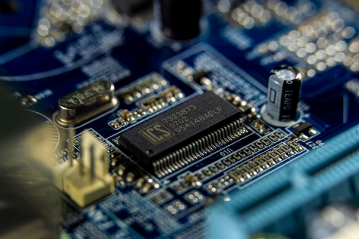
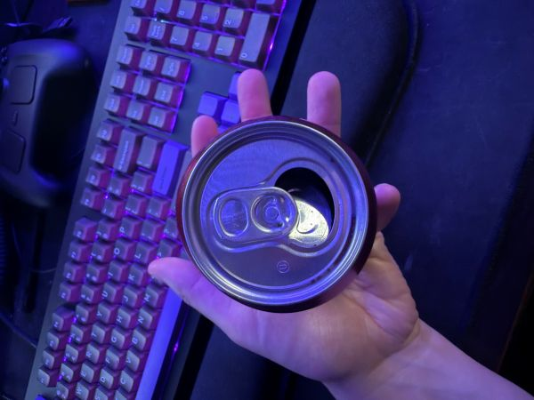
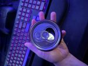

Everything Pictures
This page demonstrates various techniques for handling, resizing, and formatting images for the web. It explores the relationship between image dimensions, file sizes, and aspect ratios using both high-resolution photography and personal geometric references.
Demonstrating Image Manipulation with a Circuit Board Photo from Pexels
I selected this photo of a Circuit Board because the fine details of the components and traces make compression artifacts easy to spot. It was taken by Sergei Starostin. The original image is a high-resolution JPG measuring 5873x3915 pixels, with a file size of roughly 1.7 MB.
Downsizing Images with CSS
Proper Reduction of Image with Editor

Improper Image Proportions with CSS
Improper Enlarging with CSS
Demonstrating Proportions with a Personal Geometry Image
I took this photo featuring my hand and a can of soda from above. I picked a soda can because a perfect circle is an excellent way to easily spot visual distortion. The resolution is 3024x4032 pixels, and the file size is 2.05 MB.
Original Image and Converted Formats
Downsizing Images with CSS
Proper Reduction of Image with Editor

Improper Image Proportions with CSS
Improper Enlarging with CSS

AI Usage & Reflection
AI was utilized in this assignment for page for a rubric and checking my work.
This assignment was quite repetitive at points, and confusing at others. For example the instructions say "use inline css to resize the ORIGINAL image" but using the original image causes an error due to the size requirements.